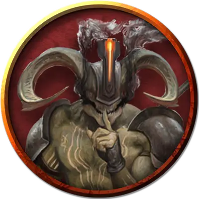

Горькое Дыхание
Bitter Breath
Большое Исчадие (Дьявол), законно-злое, именной НИП

Класс Доспеха 18 (природный доспех)
Хиты 178 (17к10 + 85)
Скорость 20 футов
| мод | спас | ||
|---|---|---|---|
| СИЛ | 22 | +6 | +10 |
| ЛОВ | 17 | +3 | +7 |
| ТЕЛ | 21 | +5 | +5 |
| мод | спас | ||
|---|---|---|---|
| ИНТ | 12 | +1 | +1 |
| МДР | 16 | +3 | +7 |
| ХАР | 17 | +3 | +7 |
Сопротивление урону холод; дробящий, колющий, рубящий от немагических атак, кроме нанесённых посеребрённым оружием
Иммунитет к урону огонь, яд
Иммунитет к состояниям отравление
Чувства тёмное зрение 120 футов, пассивное Восприятие 13
Языки Инфернальный, Телепатия 120 фт.
Опасность 11 (7200 опыта)
Бонус мастерства +4
Особенности
Дьявольское зрение. Магическая тьма не мешает тёмному зрению дьявола.
Сопротивление магии. Дьявол совершает с преимуществом спасброски от заклинаний и прочих магических эффектов.
Вариант: Призыв дьявола. У некоторых дьяволов может быть действие, позволяющее им призывать других дьяволов.
Призыв дьявола (1/день). Дьявол выбирает, кого призвать, и пытается это сделать. Рогатый дьявол получает 30% шанс призыва одного рогатого дьявола (Мальбранш) [horned devil].
Призванный дьявол появляется в свободном пространстве в пределах 60 футов от призывателя, и действует как его союзник, не имеющий способности призывать дьяволов. Он призывается на 1 минуту или пока призыватель не умрёт или действием его не отпустит.
Действия
Мультиатака. Дьявол совершает три рукопашные атаки: две вилами, и одну хвостом. Он может использовать Метание пламени вместо любой рукопашной атаки.
Вилы. Рукопашная атака оружием: +10 к попаданию, досягаемость 10 футов, одна цель. Попадание: Колющий урон 15 (2к8 + 6).
Хвост. Рукопашная атака оружием: +10 к попаданию, досягаемость 10 футов, одна цель. Попадание: Колющий урон 10 (1к8 + 6). Если цель — существо, не являющееся ни нежитью, ни конструктом, она должна преуспеть в спасброске Телосложения Сл 17, иначе будет терять 10 (3к6) хитов в начале каждого своего хода из-за инфернальной раны. Каждый раз, когда демон попадает этой атакой по цели, уже имеющей эту рану, урон от раны увеличивается на 10 (3к6). Любое существо может залечить рану, если действием совершит успешную проверку Мудрости (Медицина) Сл 12. Эта рана также закрывается, если цель получит магическое лечение.
Метание пламени. Дальнобойная атака заклинанием: +7 к попаданию, дистанция 150 футов, одна цель. Попадание: Урон огнём 14 (4к6). Если цель — горючий предмет, который никто не несёт и не носит, она также загорается.
Описание
Это желчный, злопамятный главарь банды, который пал жертвой жестокой политики Авернуса. В прошлом он был исчадием ада по имени Л’зет и строил козни против Зариэли, прислуживая Белу. Едва Зариэль возглавила Авернус, она понизила Л’зета до рогатого дьявола.
Какое-то время Л’зет зализывал раненое самолюбие. Но в итоге униженный дьявол снова обрёл амбиции и впутался в заговор по свержению Зариэли. Шпионы архидьяволицы прознали об этом, и в дополнительное наказание Зариэль отняла у Л’зета крылья и прокляла рогатого дьявола так, что он больше не может заключать сделки. Любой документ, подписанный Л’зетом, тут же тает, а любые слова обращаются в дым на его устах. Потому Л’зета и прозвали Горькое Дыхание.